string T_TUT_PRE_LEVEL 전 10로케일 교체 ✓const friend_panel_unlock_level=15 ✓const rv_double_unlock_clear_count=3 ✓const interstitial_ad_level_clear_interval 3→0(기존 변수) ✓const is_iap_popup_open=0 추가(신규 토글) ✓unlock content_daily_check 4→7 ✓unlock content_daily_task 10→13 ✓const is_inbox_fanpage_follow_popup_open=0 ✓대상 지표 (06/11 Meta 회신으로 재정의): CDR 3시그널. Promoted 티어는 CDR(Content Distribution Ranking)이 결정하며, 시그널은 ① 신규 유저 D14 리텐션 ② WAU@14 ③ 좋아요 비율(좋아요/싫어요, 60일 롤링). Meta가 명시한 인과 사슬이 본 기획의 존재 이유다: "강력한 온보딩 — 높은 첫 세션 완료율 → D14 리텐션에 직접적 영향", 그리고 리소스 투자 1순위 = 온보딩 개선. 60초·첫 세션은 그 자체가 평가 지표가 아니라 D14로 가는 퍼널의 최상단이다.
게임은 Toss 플랫폼에 라이브(소프트런칭). EQR 제출(07/01) 전에 Toss에서 개선 업데이트를 1회 적용하고 관찰한다. [06/16 결정] 9개 일감을 2회로 나누지 않고 한 빌드에 동시 배포 — 표본 ~140 NRU/일·2주 시한이라 분리 실측의 통계적 실익이 없고(개별 효과 +1~2pp는 분리해도 검출 불가), 순차 배포 시 각 관찰 윈도우가 1주 미만이라 D7·D14를 못 본다. 대신 퍼널 계측으로 단계별 개선·이탈 이동을 간접 확인하고, 수익화(R4·R11)만 ARPDAU 가드레일로 분리 모니터(번들이어도 수익화 건드린 건 이 둘뿐이라 소거법 귀속 가능). 아래 그룹 ①②는 분류용(배포 순서 아님). 운영 관찰(구 Wave3)은 빌드가 아니라 출시 후 시트/서버 원격 파라미터 튜닝.
⚠ 시트 vs 빌드: 시트 파라미터 변경(R3·R7·R9·R11·R12 등)은 클라가 기 참조하므로 빌드 없이 다음 sync 시 발효 = 이미 라이브 시트 반영 완료. 신규 클라 로직이 필요한 항목은 R4·R5·팬페이지(+R8 서버). 수익화(R4·R11·R12)는 EQR 제출 빌드에 포함.
관찰은 BigQuery game-log-359704.raw.solitaire_city_journey_toss. 현존 이벤트로 출시 첫날부터 베이스라인 측정, §4 신규 계측으로 보강. 업데이트 1 관찰 쿼리(Q1~Q5)는 pst_ftue_wave1_queries.sql(도구 bq CLI, 계정 esther@supergene.co).
| 일감 | 진행 + 적용 | 상태 |
|---|---|---|
| R3 | 입장료 카피 교체 — string_code T_TUT_PRE_LEVEL 전 10개 로케일. 클라 로직 변경 없음 | ✓ 시트 반영 · QA만 |
| R5 | 친구 패널 게이트 — 빈 친구 패널 = 빈 리더보드(R8)와 같은 첫인상 마찰. const friend_panel_unlock_level=15(그래프 빌 동안 숨김). 개발: 레벨<15 패널 비표시 + 잠금 부스터 그레이스케일 | ✓ 시트 · 개발 대기 |
| R8 | 리더보드 봇 — 빈 리더보드 첫인상 마찰. 구체 설계는 서버팀 재량, 원하는 바만 전달(초기 채움·세션 내 동일 봇·자연스러움·보상 봇 제외). pst_ftue_dev_handoff.md §3 | 서버 재량 |
| R4 | RV(x2) 노출 게이트 — const rv_double_unlock_clear_count=3 추가됨. 개발: 누적 클리어<N이면 x2 비노출 분기 + 누적 클리어수 소스(§8 P0) | ✓ 시트 · 개발 대기 |
| R11 | 전면(IT) 광고 전체 off — interstitial_ad_level_clear_interval 3 → 0("0=노출 안함"). 수익화 평가 무관(Q5)이라 평가 기간 전부 제거. 시트값만·개발 불필요 | 시트 off · QA만 |
| R12 | IAP 자동팝업 off — 신규 const is_iap_popup_open=0(토글). content_iap_popup 15 유지. 클라가 플래그로 자동팝업 제어 — 개발 필요 | ✓ 시트 · 개발 대기 |
| 계측 | 현존 이벤트로 충분(§4). nth_event 퍼널 쿼리로 퍼널·이탈·D14 코호트 측정. 신규 없음, level_index만 선택 | 현존 활용 |
| 일감 | 진행 + 적용 | 상태 |
|---|---|---|
| R7 | 출석 해금 Lv.7 — content_daily_check condition_val 4→7. 클라가 unlock 파라미터 기 참조 | ✓ 시트 반영 · QA만 |
| R9 | 미션 해금 Lv.13 — 오늘의 미션 content_daily_task 10→13(데일리 휠은 9 유지). 클라 기 참조 | ✓ 시트 반영 · QA만 |
| 신규 | 인박스 팬페이지 팝업 — const is_inbox_fanpage_follow_popup_open=0 추가됨. 개발: 플래그로 팝업 on/off 제어 | ✓ 시트 · 개발 대기 |
6020_USER_CURRENT_LEVEL + 판수 분포 — 출석7·미션13 도달이 평균 9~10판과 정합한지 ② 데일리 첫 도달 레벨·시점(현존 이벤트 nth) ③ 6000_FRIEND_COUNT 친구 패널(Lv.15) 노출 후 초대 전환condition_val 미세조정 • 친구 게이트 friend_panel_unlock_level — DAU·전환 보고 15에서 하향신규 구현 없이 BigQuery Toss 관찰 → 시트/서버 원격 파라미터 조정으로 운영. 신규 빌드가 필요한 변경(예: 추가 클라 로직)은 별도 업데이트로 분리 — 단 수익화 변경은 CSB 시작 전에만.
| 관찰 대상 | 튜닝 액션 |
|---|---|
| 베팅 잔고·이탈 (현행 강제 베팅 모니터) | 강제 베팅 참여가 잔고 경제 과부하·초기 이탈에 유의 기여하는지 관찰 → 문제 시 베팅 시점·강도 재조정(빌드 필요 시 별도) |
| 친구 패널 초대 전환 (R5) | friend_panel_unlock_level=15 → DAU 확보·전환 데이터 보고 하향(시트값만, 빌드 무관) |
| 리더보드 실유저 수 (R8) | 봇 축소 임계: 실유저 ≥30→봇15, ≥50→0 (서버 원격 파라미터, 빌드 무관) |
스펙 카드를 카드(pst_ftue_update_cards.html)와 동일한 카테고리 순서로 묶었다 — 마찰·첫인상 → 수익화 → 복귀 페이싱 → 외부 채널 → 제외. 단일 빌드 동시 배포라 배포 순서 아님. 계측은 §4(현존 이벤트로 충분). R 번호는 식별자일 뿐.
시티 첫 진입 직후 레벨 팝업에서 마스코트가 "게임을 하려면 입장료가 필요해요!"를 첫 메타 메시지로 전달한다. 게임 시작 30초 — 아직 게임이 좋아지기 전 — 에 배우는 첫 규칙이 "플레이에는 돈이 든다"는 손실 프레임이다.
New UAP 60s
| AS-IS | "게임을 하려면 입장료가 필요해요!" — 손실 프레임 |
| TO-BE 확정 | "입장료보다 더 큰 보상이 기다려요!" — 캐주얼 톤 기준 채택. 보상 마진 수치와 모순 없음 확인 완료 (06/11) |
| EN | "Win back more than your entry fee!" — EQR ⑥ 영어 필수, KR과 동시 적용 |
| 적용 위치 | 밸런스시트(1oLb) string 테이블(PST_string_code) — 입장료 툴팁 말풍선 string_code 교체. 팝업 하단 입장료 수치 표기는 유지 |
| 기획 | string 테이블에서 해당 코드 텍스트 교체 — 클라 로직 변경 없음. ⚠ KR/EN뿐 아니라 string_code의 전 지원 로케일(ES·PT·ID 등) 모두 교체. 정확한 string_code key는 개발과 대조 확정 |
| QA | 레벨 진입 팝업(2090_PRE_LEVEL_SHOW)에서 교체 카피가 주요 로케일에 반영됐는지 확인 |
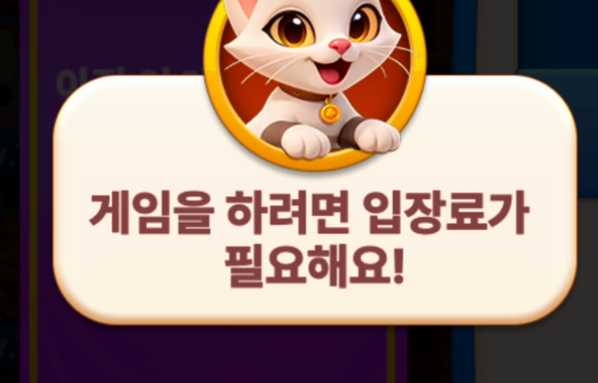
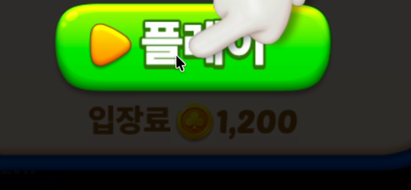
레벨 4 입장 팝업(0:52)에 "아직 이 레벨에 친구가 없어요!" + 초대 버튼 패널이 뜬다. 친구 기능이 뭔지도 모르는 신규에게 결핍부터 보여주는 빈 소셜 노출이다. 잠긴 부스터 3종도 행동 불가능한 시각 노이즈.
좋아요 비율·첫인상 (R8과 동류)
| 실제 적용 (06/16) | const friend_panel_unlock_level = 15 (원안 unlock 행 Lv.6에서 변경). 이유: ① unlock 행 방식은 친구 패널이 unlock으로 제어되는지 불확실(§8 P1) → const 토글이 안전 ② 소프트런칭은 소셜 그래프가 비어 Lv.6 노출 시 여전히 "빈 친구" 첫인상 위험 ③ "게임에 몰입해 친구를 부르고 싶은 시점"(베팅 졸업·실스테이지 안착 이후 = Lv.15)에 노출하는 게 초대 품질·잔존 정합. const라 DAU 확보 후 실데이터로 하향 튜닝 |
| 적용 위치 | 라이브 시트(1oLb) const 탭 신규 friend_panel_unlock_level=15 (key 10087) + workspace const_toss.json sync. 클라가 이 레벨로 패널 게이트하는 로직 필요(개발 핸드오프) |
| 기획 | unlock 탭 행 추가(condition_val=6) + 친구 패널 노출 카피 점검 |
| 개발 | 레벨 6 미만이면 패널 영역 비표시(팝업 높이 축소, 빈 공간 금지). 잠금 부스터 3종은 기존 부스터 아이콘을 그레이스케일 처리한 실루엣 + 해금 레벨 표기 — 신규 아트 제작 없음(아트 칩 제외 사유) |
| QA | 레벨 6 미만 패널·빈공간 미노출 / 레벨 6 도달 시 노출 / 부스터 실루엣 표기 확인 |
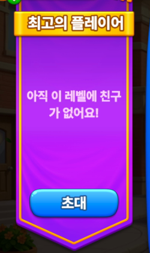
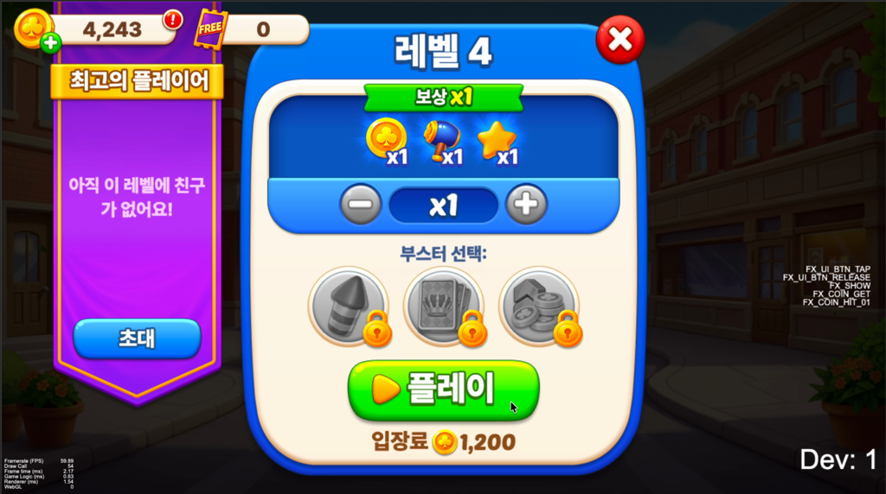
FTUE 말미 리더보드 자동 오픈 시 이번 주 보드에 2명, 1위 296점 vs 내 2점. 경쟁 동기가 아니라 "아무도 안 하는 게임"이라는 역효과 사회적 증거다. 소프트런칭 초기엔 이 상태가 기본값이 된다.
Meta 회신으로 중요도 상향: ① 평점은 게임플레이 직후 플랫폼 좋아요/싫어요 프롬프트로 수집 — 세션 마지막 인상이 평점을 결정하는데, 현재 FTUE의 마지막 화면이 바로 이 빈 리더보드다. ② Meta가 Promoted 공통 특징으로 "소셜 기능(리더보드·챌린지·토너먼트) 활용 게임의 높은 인게이지먼트"를 명시 — 리더보드를 죽여두는 것 자체가 손해.
좋아요 비율 · WAU@14
봇 수·점수 분포·성장·닉네임/아바타·리셋 주기 등 구현 방식은 서버에서 알아서 설계한다. 기획이 바라는 결과만 전달:
| 채움 | 리더보드가 초기부터 자연스럽게 채워져 보일 것 — 빈/거의 빈 리스트(2명·296 vs 2)는 "사람 없는 게임"처럼 보여 퀄·평점을 깎음 |
| 세션 일관성 | 같은 세션 안에서 다시 봤을 때 동일한 봇 유저가 보일 것 (새로고침마다 봇이 바뀌면 가짜 티 남) |
| 자연스러움 | 가짜 티 안 나게. 신규가 너무 절망적이지 않게 추월 가능한 분포면 좋음 |
| 보상 | 랭킹 보상은 봇 제외, 실유저만 산정. 실유저 충분히 늘면 봇 비중 축소 |
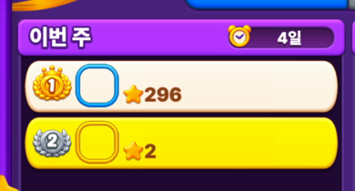
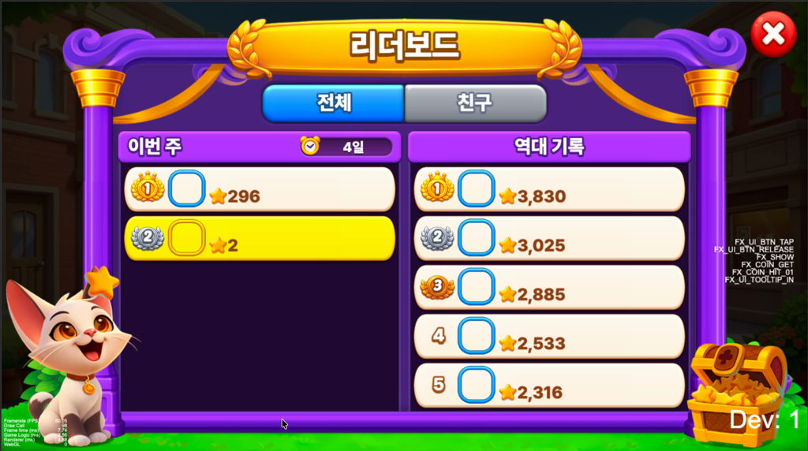
첫 클리어(0:10)부터 모든 완료 화면에 받기 / x2 받기 2버튼이 뜨고, 광고 쪽(주황)이 더 크고 화려하다. 신규 유저가 더 큰 보상에 끌려 광고를 탔다가 30초짜리 RV에서 이탈하면 광고가 New UAP 60s를 직접 깎는다. 영상 내 완료 화면 3회 모두 동일 패턴.
New UAP 60s · EQR ④
| 규칙 | 누적 클리어 < N이면 x2 받기 비노출 — 받기 단일 버튼 중앙 배치. 계정 누적 클리어 기준(세션 아님), 재방문 시에도 일관 |
| 적용 위치 | 밸런스시트(1oLb) const 탭(PST_const.json) — 신규 행: const_name=rv_double_unlock_clear_count, const_value=3. 기존 entry_cost_* 행과 동일 구조(원격 조정 가능) |
| 기획 | const 탭에 rv_double_unlock_clear_count=3 추가 (3 = 첫 60초 클리어 2회 완전 차단 + TUT_0003까지 광고 0) |
| 개발 | 누적 클리어 < N이면 x2 버튼(2420/2421) 비노출·받기 단일 버튼 분기. 노출 후 광고 표식(필름 아이콘) 유지 |
| QA | 1·2판 x2 미노출 / 3판부터 노출 / 재방문 시 누적 기준 유지 확인 |
| 수익 영향 | 첫 3판 한정. Toss 판당 RV 0.1476 기준 인당 최대 0.44회분이나 FTUE 초반 전환은 그보다 낮아 영향 미미 추정 — Q3 ARPDAU 가드레일로 모니터링(§2 그룹①) |
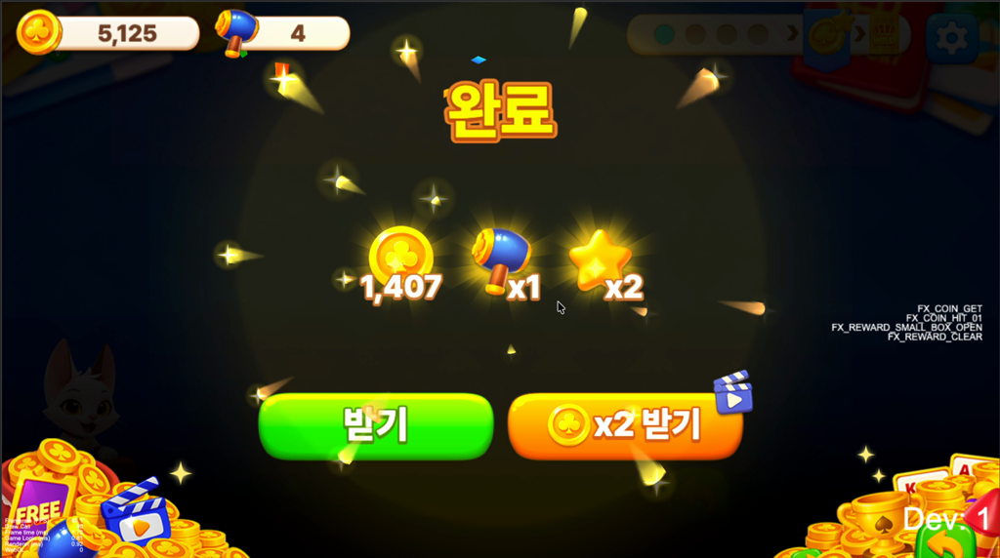
NRU 첫날 10.1%가 전면(IT) 광고에 노출, 중위 262초. 전면 광고는 RV(보상형·자발적)와 달리 강제·비보상이라 이탈 자극이 크다. EQR V4 수익화 평가 무관(Q5, Meta 직접 확인) → 평가 기간엔 첫 세션만이 아니라 전부 끄는 게 CDR 최적(평가 이득 0, 리텐션 리스크만).
D14
| 규칙 | 전면 광고 전체 비노출(평가 기간). 수동/보상형 RV(R4)는 자발적·잔존 +효과라 유지 |
| 적용 (시트) | const interstitial_ad_level_clear_interval 3 → 0("0=노출 안함"). 기존 변수 값 변경 → 개발 불필요(클라가 기 참조) |
| QA | 전면 광고 전혀 안 뜨는지 확인 |
| 복원 | Promoted 확보 후 다시 켤 때 interval 값 복귀(시트값만, 빌드 무관) |
special_offer_1(Starter Pack, $1.99)가 자동 팝업된다. NRU 첫날 4.0% 노출(8070_SPECIAL_DEAL_POPUP), 구매 시도 0.1%, 97.5%가 그냥 닫음 — 전환 0의 순마찰. EQR V4 수익화 평가 무관(Q5)이라 빼도 평가 손실 0.
D14
| 규칙 | special_offer 자동 팝업 비노출(평가 기간). 유저 직접 상점 진입 노출은 유지(차단 아님) |
| 적용 (시트) | 신규 const is_iap_popup_open = 0(자동팝업 on/off 토글, 0=숨김). content_iap_popup(노출 레벨 게이트)은 15 유지. 999 하이게이트 편법 대신 전용 토글로 깔끔하게 |
| 기획 | const is_iap_popup_open=0 추가 (✓ 라이브 반영) |
| 개발 | 신규 변수 → 개발 필요. 클라가 is_iap_popup_open=0이면 자동팝업 미발동하도록 분기(is_daily_wheel_open 등과 동일 패턴) |
| QA | 자동 팝업 안 뜨는지 / 수동 상점 정상 확인 |
| 복원 | Promoted 확보 후 is_iap_popup_open=1로 켜기(시트값만) |
TUT_0004 클리어 후 시티 복귀 직후 오늘의 선물(7일 출석) → 럭키 체스트 튜토리얼이 연속 스택으로 뜬다. 둘 다 재방문 장치인데 첫 세션 한가운데에 연달아 소비되면서, 특히 데일리 기프트의 "내일 더 큰 보상" 메시지가 게임에 애착이 생기기 전에 휘발된다.
WAU@14
| 실제 적용 (06/16) | 출석 = content_daily_check, condition_val 4 → 7. 원안의 content_streak이 아님 — streak(연속 보상 미터)은 인게임 핵심 콘텐츠라 해금 시점 미변경(5 유지). daily_check를 평균 첫 세션(9~10판) 안인 7판에 둬, D1 7.5% 현실에서 "내일 보상" 락인을 이탈 전 노출 → D1 후킹 |
| 적용 위치 | 라이브 시트(1oLb) unlock 탭 content_daily_check 행 condition_val 7 (condition_type=level_clear 유지). 라이브 반영 + workspace unlock_toss.json sync 완료 |
| 기획 | unlock content_daily_check condition_val 4→7 (✓ 라이브 반영 완료) |
| 개발 | 없음 — 클라가 unlock 파라미터(condition_val)를 기 참조, 시트값만으로 발효(기존 변수 값 변경) |
| QA | 출석이 더 이른 시점이 아닌 Lv.7(7판 클리어) 도달 시 해금되는지 확인 |
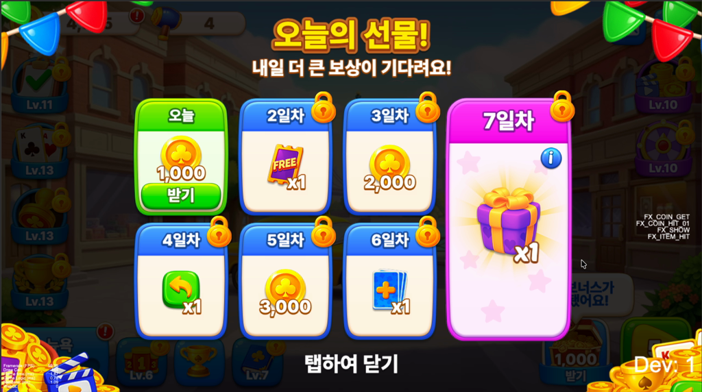
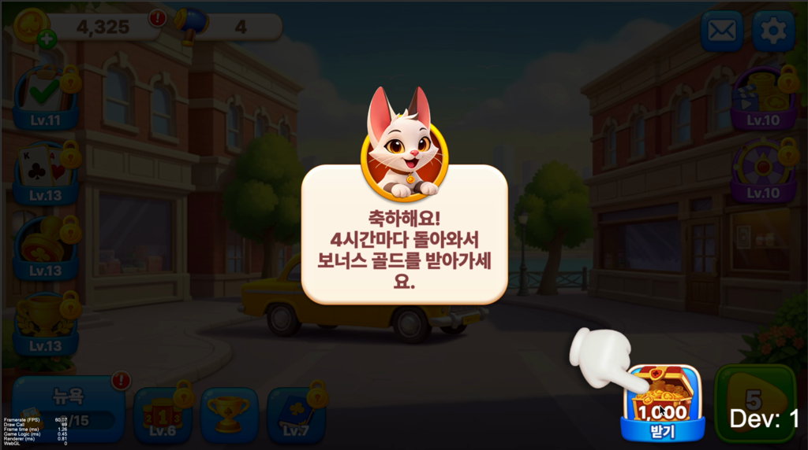
첫 5분에 시스템 소개 9개 — 평균 33초당 1개씩 새 개념이 주입되고, 특히 3:24~4:48에 데코·휠·베팅·미션 4개가 84초 안에 연쇄된다. 각 소개가 툴팁+팝업으로 플레이를 중단시키며, 학습이 누적되지 않고 휘발된다. "콘텐츠 많음" 인식은 자산이지만, 전부 첫 세션에 소비하면 세션 2 이후의 새로움이 남지 않는다 — D14 윈도우 14일을 채울 페이싱 자원의 조기 소진.
D14 · WAU@14
데일리 3종을 평균 첫 세션 종점(9~10판) "직후"인 레벨 11·12·13에 순차 배치. 평균 유저는 세션 2 초반에 하나씩 만나 복귀 직후 "받을 것·돌릴 것·할 일"이 생기고, 헤비 유저는 첫 세션 후반에 자연 도달해 소외되지 않는다. 레벨 게이트라 세션 판정 의존이 없어 웹 환경에서도 안정적 — R7(데일리 기프트)도 같은 방식으로 통일.
| 세션 1 유지 | 입장료(R3)·리더보드(R8 봇 선행)·컬렉션 앨범·시티 데코·럭키 체스트 — 코어 루프와 메타의 뼈대 + 4시간 재방문 동기 1개 |
| 해금 레벨 | 실제 적용 (06/16): 출석(content_daily_check) 7 · 데일리 휠(content_daily_wheel) 9 유지(원안 12에서 조정 — 락인 콘텐츠를 첫 세션 밖으로 너무 미루지 않음) · 오늘의 미션(content_daily_task) 13(능동 목표라 세션2). streak(데일리 기프트로 오인했던 키)은 핵심 콘텐츠라 미변경 |
| 적용 위치 | 라이브 unlock 탭 — content_daily_task condition_val 10→13. content_daily_wheel은 9 유지(변경 없음). 둘 다 기존 행(신규 행 아님) |
| 기획 | unlock content_daily_task 10→13 · 휠 9 유지 (✓ 라이브 반영 완료) |
| 개발 | 없음 — 클라가 unlock 파라미터를 기 참조(기존 변수 값 변경, 캐스케이드 큐안은 드랍) |
| QA | 오늘의 미션 Lv.13 / 데일리 휠 Lv.9 해금 확인 |
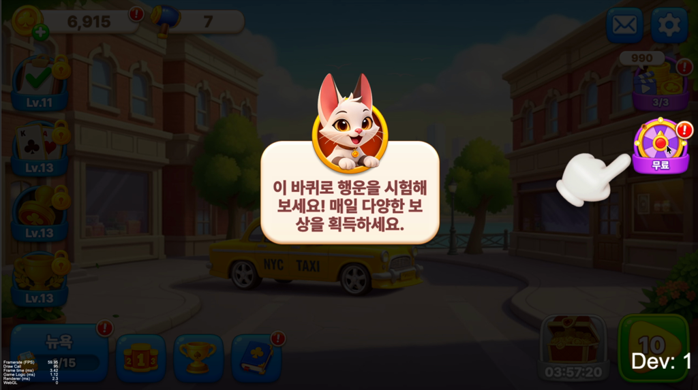
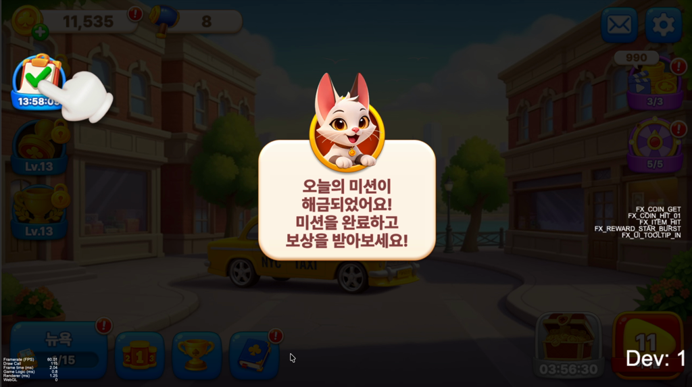
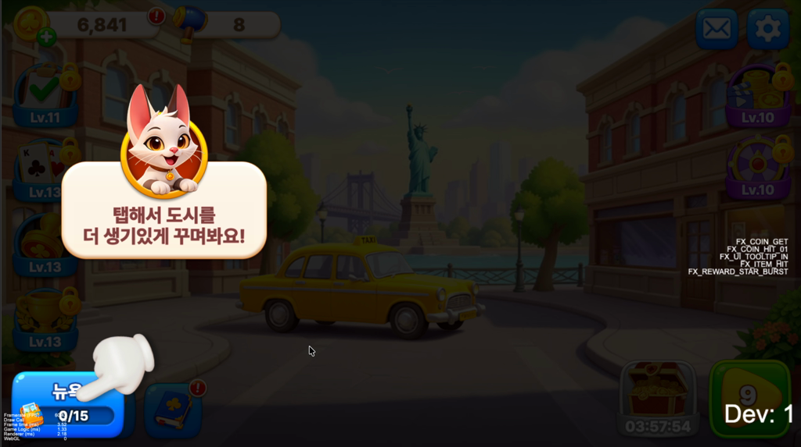
인박스(우편함) 지점에서 팬페이지 팔로우를 유도하는 팝업 — 외부 채널(팬페이지 팔로워) 확보 레버. 소프트런칭 초기엔 off, 그래프·시점 무르익으면 on.
팬페이지 팔로우 전환 (외부 채널)
| 적용 (시트) | 신규 const is_inbox_fanpage_follow_popup_open = 0 (0=숨김, 1=노출) |
| 기획 | const 추가 (✓ 라이브 반영) |
| 개발 | 신규 변수 → 개발 필요. 클라가 플래그로 인박스 팬페이지 팝업 on/off 제어 |
| QA | 0=미노출 / 1=노출 확인 |
R1·R6 기획 제거. 둘 다 라이브 빌드에서 정상 동작(R1 빈 전환 1초 미만·받기→다음판 정상 / R6 블랙스크린은 개발 환경 한정, 라이브 미발생)으로 확인돼 실제 작업이 없는 항목이라 기획에서 드랍. 별도 검증·개발 불필요.
R2 제외. 시티 복귀 시퀀스에 별도 연출을 얹는 방향은 — 기존 이펙트 재활용·팝업 타이밍 시퀀싱뿐이라 해도 — 직접적 연출 추가가 게임 톤과 잘 맞지 않는다고 판단. 현 동작을 그대로 유지하며 본 스펙은 드랍한다. (R6 해소로 라이브에선 시티 첫 전환 블랙스크린도 없어 첫 인상 자체의 마찰은 이미 낮음)
재평가 (06/16): 신규 계측 거의 불필요 — 현존 이벤트만으로 퍼널·이탈·리텐션 측정이 된다. 실제 BigQuery 쿼리(nth_event × 300초 윈도우, NRU 필터)로 ① 퍼널 진행·도달률 ② 이탈 지점(마지막 nth_event) ③ 단계별 도달 시간 ④ log_date+logincount_total로 D1/D7/D14 코호트까지 전부 뽑힌다. 한 번에 배포하는 본 롤아웃의 attribution(퍼널 단계별 개선·이탈 이동)도 이 쿼리로 충분하다. → 계측 일감 = "신규 이벤트 개발"이 아니라 "현존 이벤트 쿼리 세트 정비".
| 구분 | 계측 | 비고 |
|---|---|---|
| 현존 ✓ | 1010_LOAD / 9990_FIRST_TOUCH / 2150_CARD_MATCH / 2400_FINISH_RESULT | 로드·첫터치·첫매칭·클리어 퍼널 — 현존. 9990 언더로깅(51.8%) → 퍼널 신뢰지표는 TUTO 계열 |
| 현존 ✓ | 1110/1120/1130_PLAYTIME_10S/30S/60S | 10/30/60초 체류 — 60초 도달률 = 1130 |
| 현존 ✓ | nth_event 순서 · 300초 윈도우 · 마지막 nth_event | 5분 체류·이탈 지점·세션 완료를 모두 근사 → 신규 min5·quit_point·session_complete 불필요(드랍) |
| 드랍 | ftue_session_complete / ftue_min5 / ftue_popup_impression / ftue_quit_point | 현존 근사로 대체. popup_impression은 R9 캐스케이드 큐를 안 하므로 측정 대상 자체가 없음 |
| 선택 | level_index (파라미터 1개) | "레벨 단위" 퍼널을 정밀하게 볼 때만. 현 쿼리는 event 코드 기반이라 스테이지 라벨 중복(TUT_0002@Lv9) 오염을 안 탐 → 지금은 불필요, 추후 대비 옵션 |
게임 로그로 안 잡히는 2가지(별도 경로): ① 좋아요 비율(R5·R8 KPI) = Toss 플랫폼 수집(Alex 경유) — 어떤 게임 이벤트도 대체 못 함 · ② 변경 발효 확인(R4 게이트 발동·친구패널 숨김 등) = 측정이 아니라 QA 영역. 코호트 사슬(첫 세션 완료 근사 → D1/D7/D14)은 현존 이벤트+log_date로 연결.
참고(추후): 레벨 9에 TUT_0002 스테이지 라벨 재등장으로 스테이지 라벨 기준 분석은 오염될 수 있음 — 단 현 퍼널 분석은 event 코드 기반이라 무관. 레벨 단위 분석이 필요해지면 그때 level_index 추가.
| # | 항목 | 확정 내용과 근거 | 상태 |
|---|---|---|---|
| D1 | 친구 패널 게이트 (R5) | const friend_panel_unlock_level = 15. 빈 친구 패널 = 빈 리더보드 같은 첫인상 마찰(R8과 동류). 빈 소셜 그래프 회피 + 게임 몰입 시점 노출, const라 DAU 확보 후 하향 튜닝 | 확정 |
| D3 | 리더보드 봇 (R8) | 구체 설계는 서버팀 재량(이전 프로젝트 경험). 기획이 바라는 결과만: ① 초기부터 자연스럽게 채워져 보일 것 ② 같은 세션 내 동일 봇 유지 ③ 자연스럽게(추월 가능) ④ 보상은 봇 제외. (§3 R8 · 부록 B 시뮬레이션은 참고용 초안) | 서버 재량 |
| D4 | 데일리 페이싱 (R7·R9) | 출석(content_daily_check) Lv.7 · 오늘의 미션(content_daily_task) Lv.13 · 데일리 휠 9. 출석은 평균 첫 세션(9~10판) 안에 둬 "내일 보상" 락인을 이탈 전 노출(D1 후킹), 미션은 능동 목표라 세션2로 | 확정 |
| D6 | 전면(IT) 광고 (R11) | 전체 off. 수익화 평가 무관(Q5, Meta 직접 확인)이라 평가 기간엔 전부 제거. const interstitial_ad_level_clear_interval = 0("0=노출 안함", 시트값만·개발 불필요). 보상형 RV(R4)는 자발적·잔존 +효과라 유지. Promoted 확보 후 복원 | 확정 |
| D7 | IAP 자동팝업 (R12) | 자동팝업 off. 수익화 평가 무관(Q5) → 전환 0의 순마찰 제거. 신규 const is_iap_popup_open=0(전용 on/off 토글, 999 하이게이트 편법 대신). content_iap_popup 15 유지. 클라 구현 필요. Promoted 후 켜기 | 확정 |
| 지표 | 베이스라인 | 목표 |
|---|---|---|
| 60초 체류 도달률 | 42.7% (실측 06/15, §A) | R-set 적용 후 +1~2pp 예측(§A-3) → 소프트런칭 W1 실측 재확인 |
| 첫 터치 도달률 | Toss v188 누적 80.3% | IG ≥ 80% 재현 — 미달 시 플랫폼 고유 마찰 조사 우선 |
| 첫 클리어 도달 시간 | p50 28초 (실측 06/15, §A) | 중위값 ≤ 15초 목표 — 현재 1.9배. 튜토리얼 내부 이탈(§A-3)이 주원인 |
| 시티 전환 무반응 시간 | 개발 환경 2~4초 (라이브 미발생 확인) | 라이브 빌드 0초 검증 1회 + city_load_ms로 IG 저속 환경 상시 확인 |
| 60초 내 비플레이 마찰 요소 | 완료 2(RV 포함)·레벨 팝업 2 | 첫 세션 RV·강제광고·손실 프레임 0 (R4·R11·R3). R1·R6은 라이브 정상 동작 확인으로 제거 |
| ARPDAU (가드레일) | 소프트런칭 W1 | R4·R11로 인한 유의미한 하락 없음 — 하락 시 R4 N값 조정. 수익화는 EQR 제출 빌드에 포함되므로 평가 전 모니터 |
| 첫 세션 완료율 v0.4 | 소프트런칭 W1 실측 | Meta 명시 D14 직결 변수 — W2에 베이스라인 +5pp |
| D14 코호트 리텐션 v0.4 | 소프트런칭 첫 코호트 (7/8 진입분 → 7/22 측정) | CDR 시그널 본체 — 첫 세션 완료 여부별 분리 측정으로 인과 검증 |
| 지역(Asia) DAU v0.4 | — | 300+ 유지 — CDR 신뢰 시그널 최소선. 미달 시 글로벌 폴백 평가 리스크 (P2 유입 목표와 공유) |
검증 순서: ① Toss 프록시로 베이스라인 가설(06/13) → ② 소프트런칭 W1 실측(~07/14) → ③ 괴리 구간 튜닝 → ④ CSB 진입. Meta 회신으로 CSB 30일 중 온보딩·밸런스 업데이트가 공식 허용되어, 검증은 출시 게이트 1회가 아니라 30일 연속 튜닝 루프로 운영한다 (단, D14 윈도우가 14일이므로 CSB 전반부 개선일수록 시그널 반영 기회가 큼 — 빠른 이터레이션 우선).
| 스펙 | 작업 | 공수(추정) | 우선순위 |
|---|---|---|---|
| R4 | RV 노출 게이트 (카운터+분기) | 0.3d | 필수 |
| R3 | 입장료 카피 교체 — string 전 로케일 반영 완료(클라 작업 없음) | 0d | 완료·QA |
| R1 | 완료 화면 | — | 제거 (06/16) |
| R6 | 시티 전환 | — | 제거 (06/16) |
| 계측 | [재평가 06/16] 신규 4종 드랍 — 현존 이벤트 쿼리로 충분(§4). level_index만 선택(0~0.1d) | ~0d | 현존 활용 |
| R2 | 시티 복귀 팝업 시퀀싱 | — | 제외 |
| R5 | 친구 패널 레벨 게이트 (레벨<15 비표시 + 부스터 그레이스케일) | 0.3d | 권장 |
| R7 | 출석 해금 — 시트값만, 클라 기 참조 | 0d | 완료·QA |
| R9 | 미션 해금 — 시트값만, 클라 기 참조 (캐스케이드 큐안 드랍) | 0d | 완료·QA |
| R11 | 전면(IT) 광고 전체 off — interval=0(기존 변수). 클라가 0=off honor하는지 개발 확인 | ~0d | 개발 확인 + QA |
| R12 | IAP 자동팝업 off — 신규 const is_iap_popup_open=0. 클라가 플래그로 자동팝업 제어 | 0.2d | 개발 필요 |
| 팬페이지 | 인박스 팬페이지 팝업 on/off 제어 (const 플래그) | 0.2d | 권장 |
| R8 | 리더보드 봇 시드 (서버) | 1.5d | 병행 |
| 합계 (클라 빌드 작업, R8 서버 제외) | ~0.8d | R4 0.3 + R5 0.3 + 팬페이지 0.2 / 나머지 0d·QA | |
대부분이 시트 반영으로 완료(R3·R7·R9·R11·R12 = 0d·QA만), 계측 신규 없음. 남은 클라 빌드 = R4·R5·팬페이지 ~0.8d (R8 서버 1.5d 별도·병행). 선결: §8 Open Questions(R4 누적클리어수 소스·R5 제어 방식) 해소 후 공수 확정.
아래는 실제 진행 업무가 아니라 의사결정 근거·분석 자료다. 본문(2~8장) 결론의 출처로 참조. A 베이스라인 분석 · B 시뮬레이션 · C 첫 5분 분석 · D AS-IS/TO-BE · E 지킬 것(강점) · F Meta 회신 함의.
소프트런칭 전 현 라이브(AS-IS) 상태를 BigQuery Toss로 실측해 비교 기준을 만들고, 각 웨이브의 개선폭을 예측한다. 데이터: solitaire_city_journey_toss 최근 14일(NRU 1,958명) / 코호트는 D14 관측가능 구간(n=2,980). 쿼리 pst_ftue_wave1_queries.sql.
| 지표 | 실측 | 해석 |
|---|---|---|
| 60초 체류율 | 42.7% | 10초 66.2% → 30초 51.4% → 60초 42.7%. 초반 급감 |
| 첫 클리어 도달률 / 시간 | 48.8% / p50 28초 | NRU 절반만 첫 보드 클리어. 중위 28초 = 목표 ≤15초의 1.9배(숙련자 10초) |
| D1 / D7 / D14 리텐션 | 7.5% / 2.0% / 1.2% | 인스턴트플레이(웹·무설치) 특성상 구조적으로 낮음 — CDR은 지역 상대평가라 절대값보다 개선 추세가 관건 |
| 클리어당 받기 / x2 시도 / RV 완주 | 76.7% / 21.2% / 90.4% | RV 완주율 90% = 광고 자체 이탈은 작음(~9.6%) |
| 이탈 지점 1위 — 튜토리얼 인트로 | 27.0% | NRU 마지막 이벤트 1위가 2110_TUTO_INGAME_INTRO. + 튜토 스텝 11.1% → 이탈의 ~43%가 튜토리얼 내부 |
| 이탈 지점 — 완료화면 / 로드후 / 입장팝업 | 9.2% / 8.6% / 3.2% | 2400 완료화면(R1) 9.2% · 1010 로드 직후 8.6% · 2090 입장팝업(R3) 3.2% |
| 첫 세션 수익화 노출 — IT광고 / IAP오퍼 / 상점 | 10.1% / 4.0% / 3.2% | IT(4000) 중위 262초·강제 비보상 → R11(const interstitial_ad_level_clear_interval) · 오퍼 팝업(8070) 중위 748초·구매 0.1%·97.5% 닫음 → R12(Lv.14↑+맥락) · EQR 수익 미평가라 제거 가능 |
모델: 각 수정의 대응 이탈지점 share × 회복률(유사 온보딩 A/B 기준 10~25%). 정밀 측정은 업데이트별 실측으로 대체.
| 웨이브 / 일감 | 대상 지표 | 예측 개선폭 |
|---|---|---|
| W1 R3 입장료 카피 | 입장팝업 이탈 3.2% | 손실 프레임 제거로 일부 회복 → 진행률 +0.3~0.6pp (0공수 대비 양호) |
| W1 R1·R6 완료화면·로드 | 완료화면 이탈 9.2% | 현 동작 정상 확인만 — ~0 (이미 마찰 낮음) |
| W1 R4 RV 게이트 | 리텐션 | ~0 (데이터 기각) · 목적은 광고정책 준수 · 수익은 가드레일 관리 |
| W1 R8 리더보드 봇 | 좋아요 비율(평점) | 빈 리더보드 이탈 <2% → 리텐션 직접효과 작음. 평점 시그널(CDR ③) 개선이 주효과 — 정성 |
| W2 R9·R7·R5 페이싱·게이트 | D14 · 세션2+ 신규성 | 캐스케이드(84초 4시스템) 완화로 세션2+ 새로움 보존 → D14 +0.1~0.3pp (정성, 누적효과) |
| W3 R10 베팅 완화 | 잔고 고갈 이탈 | 골드 트랜잭션 이탈(3.7%) 일부 완화 — 관찰 후 확정 |
| R-set 합산 예측 | 60초 체류 42.7% → 43.5~45% (+1~2pp) · D14 1.2% → 1.3~1.5% (+0.1~0.3pp) | |
2110 27% 드롭 — 원인 분해신뢰 가능한 TUTO 경로로 첫 세션 퍼널을 재구성(% = 전체 NRU 대비, 괄호=로그인 후 중위 경과초):
단일 최대 누수 = 인트로(2110) → 첫 스텝완료(2141), 로그인 후 3~7초 구간에서 27pp 증발. 가설을 단계적으로 검증한 결과, 원인은 OS도 튜토리얼 설계도 아닌 유입경로(트래픽 의도)로 좁혀졌다:
| 가설 | 검증 | 결론 |
|---|---|---|
| ① 로드/렌더 지연(죽은 화면) | 로드(1010)→인트로(2110) p50 2초·양 OS 동일. 진행자는 인트로→첫스텝 3~4초로 빠름 | 원인 아님 |
| ② iOS 웹뷰 기술 페널티 | 블렌디드로는 iOS 55% vs 비iOS 72%로 보였으나 — 유입경로 통제 시 promotion에선 iOS 82.7% ≈ 비iOS 81.4%로 격차 소멸. iOS의 74%가 push에 몰려 생긴 심슨의 역설이었음 | 주원인 아님 (push 내 잔여 iOS −13pp는 2차 과제) |
| ③ 유입경로(트래픽 의도) | 동일 화면 통과율이 promotion 81~83% vs push 43~56% — OS 무관 ~30pp 격차. push(Toss 알림 노출→무심코 탭)는 저의도, promotion은 고의도. 06/10 "드롭"의 정체 = promotion→push 트래픽 믹스 시프트(캠페인 종료) | 지배적 원인 |
방법: 확정 파라미터(RV=3클리어, 친구 패널 Lv.6, 데일리 Lv.11/12/13, 복귀당 소개 ≤1, 봇 3밴드)로 4개 페르소나의 7일 진행을 시뮬레이션. 승률: 튜토리얼 100%, 이후 75%. 페르소나: 평균(9~10판/일) / 헤비(D1 18판) / 라이트(5판/일) / 이탈위험(3판 후 미복귀).
| 체크 | 결과 |
|---|---|
| 첫 60초(클리어 1~2) 내 광고·시스템 소개 0 | ✅ 전 페르소나 — RV 첫 노출은 정확히 클리어 #3 |
| 시티 복귀 1회당 소개 ≤ 1 | ✅ 전 페르소나 위반 0 — 헤비 유저가 한 세션에 Lv.13까지 돌파해도 소개는 복귀마다 1개씩 순차 (기프트→판10 복귀, 휠→판11, 미션→판12) |
| 평균 유저: 데일리 3종이 세션 경계에 분산되는가 | ✅ D1 마지막 복귀에 기프트(= 종료 모멘트의 "내일 보상" 예고 — D1 후킹 의도와 정합), D2 초반에 휠·미션 순차 |
| 라이트 유저(5판/일) 소외 없는가 | ✅ D2 기프트, D3 휠·미션 — 오히려 D2·D3 복귀 보상으로 작동 |
| 리더보드: 추월 경험이 기본값인가 | ✅ 평균 D1 25위 → D2 17위 → D7 13위 (주간 추월 13명). 라이트도 D3 19위 → D7 16위. 헤비 D1부터 17위 |
| 발견 | 보정 |
|---|---|
| 봇 하위 밴드 초안(5~50점)에서 신규 유저 D1 = 26명 중 꼴찌 — "절망 격차 금지" 의도 위반 | 하위 밴드 시작점을 2~25점으로 하향 → D1부터 추월 대상 존재 |
| 봇 일괄 성장(+2~6/일)이 라이트·평균 유저의 추월을 계속 무효화 — D2에 추월 6명이 증가 후 2명으로 역전 | 밴드별 차등 성장 도입: 하위 +0~1/일(휴면 역할) — 추월이 누적·유지됨 |
시뮬레이션 스크립트: pst_ftue_sim.py (리포 보존 — 파라미터 변경 시 재실행으로 회귀 검증). 한계: 승률·스타 획득량은 가정값(75% / 승당 1.5) — 소프트런칭 실측으로 보정 필요.
Meta "첫 5분" 기준에 맞춰 풀 세션 레코딩(5:57)을 추가 분석. 0~2분은 1차 영상과 동일 플로우 재확인. 2~6분 구간에서 신규 시스템 소개가 연쇄적으로 쏟아진다:
| 시점 | 해금/소개 | 비고 |
|---|---|---|
| 0:30 | ① 입장료 | R3 카피 교체 — 유지 |
| 1:20 / 1:24 | ② 데일리 기프트 / ③ 럭키 체스트 | ②는 R7로 세션 2 이동 결정 |
| 1:52 | ④ 리더보드 | R8 봇 충전 선행 조건 |
| 2:24 | ⑤ 컬렉션 앨범 ("퍼즐 피스를 모아보세요") | 수집 후킹 — 유지 적합 |
| 3:24 | ⑥ 시티 데코 ("탭해서 꾸며봐요", 업그레이드 0/15) | 코어 메타 — 유지 적합 |
| 3:58 | ⑦ 데일리 휠 | 84초 안에 4개 시스템 연쇄 소개 (3:24~4:48) |
| 4:16 | ⑧ 베팅(배수) + 입장료 1,200→1,800 인상 | |
| 4:48 | ⑨ 오늘의 미션 (데일리 태스크) | — |
| 4:32~ | 첫 일반 스테이지(CC_0145) 진입, 새 비주얼 테마 | ✅ 튜토리얼 졸업 시점 양호 (판수 ~10판 = 평균 정합) |
긍정 확인: 세션 종료 화면이 시티(자연 종료 시) — 마지막 인상 양호 / 데코 첫 경험과 일반 스테이지 전환 페이싱은 평균 판수(9~10판)와 정합 / 새 테마 전환이 "콘텐츠 많음" 인식에 기여.
60초 내 화면 전환 8회+ · 광고 진입로 2회 · 손실 프레임 1회 · 죽은 화면 1회 · 빈 소셜 1회
60초 내: 승리 2회(받기 액션 유지) + 시티 자연 노출 1회 · 광고 0 · 죽은 화면 0 · 손실 프레임 0 · 빈 소셜 0 · 빈 전환 화면 0
진입 즉시 TUT_0001 보드가 떠 있고, 첫 보드는 2·3·4·5 순차 클리어가 강제되는 구성이라 실패할 수 없다. 별도 튜토리얼 화면 없이 마스코트 말풍선 하나로 학습이 끝나며 첫 승리가 10초에 완결된다. 60초 안에 승리 경험이 2~3회 들어가는 이 구조가 New UAP 60s의 가장 강력한 장치다.
아래 R1~R8은 전부 이 플레이 구간 바깥의 변경이다. 보드 구성·딜 속도·말풍선 가이드는 변경 금지.
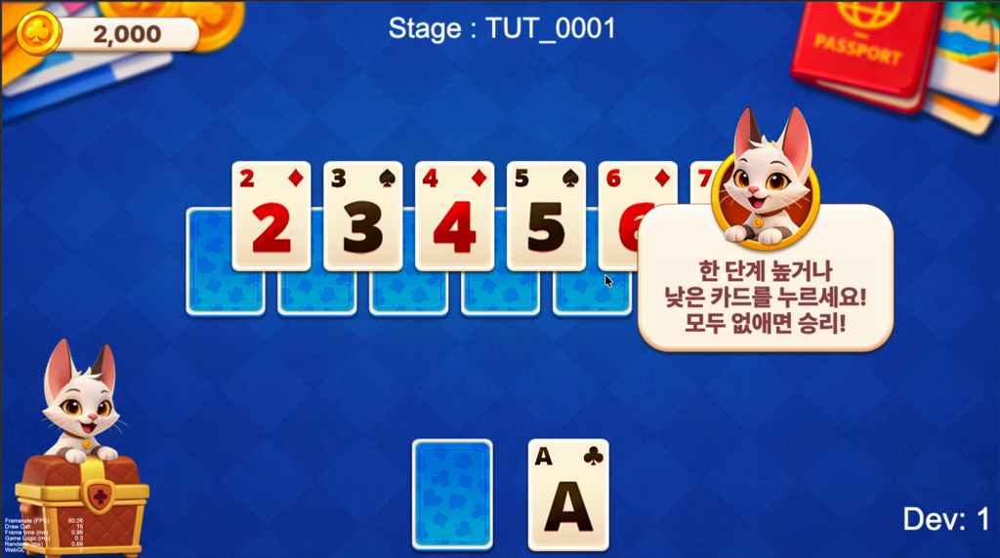
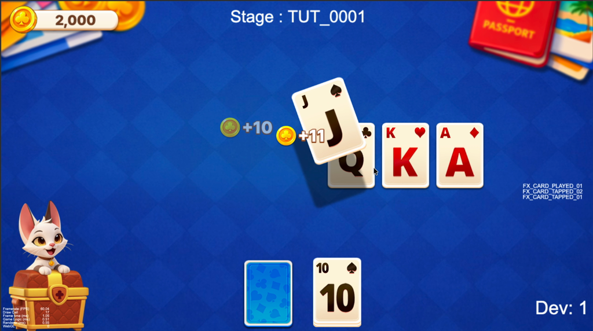
| 회신 내용 | 본 기획 반영 |
|---|---|
| 평가 = D14 리텐션 중심 "첫 세션 완료율 → D14 직접 영향", 투자 1순위 = 온보딩 |
본 기획(R1~R8)의 우선순위가 Meta 공식 가이드로 검증됨. 측정 목표를 60초 통과율에서 첫 세션 완료율 + D14 코호트로 확장 — 계측에 세션 완료 이벤트 추가(§4) |
| "첫 5분"이 기준 단위 | 분석 완료 (06/11 추가 레코딩 5분 57초) — §C에 2~6분 구간 분석 추가. 핵심 발견: 첫 5분에 신규 시스템 소개 9개(해금 캐스케이드 과밀) → R9·R10 신설 |
| 평점 = 플랫폼 좋아요/싫어요 게임플레이 후 Meta 프롬프트 표시, 60일 롤링, 개발사 대시보드 열람 불가(개선 중) |
자체 평점 프롬프트(P0-2) 역할 축소 — 수집 주체가 플랫폼이므로 우리가 할 일은 "세션이 긍정 모멘트로 끝나게" 만드는 것. 세션 마지막 인상이 좋아요/싫어요를 결정 → R8(빈 리더보드) 중요도 상향. 평점 현황은 Alex 경유 확인 루틴 수립 |
| CSB 30일 + 적극 업데이트 권장 버그·퍼포먼스 필수, 온보딩 개선 강력 권장, 밸런스 허용. 금지: 코어 루프·수익화 구조 변경 |
"수정 불가" 가정 해제 — R1~R7은 출시 전 탑재가 최선이나, CSB 중 데이터 기반 튜닝 루프가 공식 허용됨(원격 파라미터 설계가 그대로 유효). 단 R4(RV 게이트)는 출시 전 확정 필수 — CSB 중 수익화 변경은 금지 영역 |
| 지역 단위 상대평가, 신뢰 시그널 최소 300 지역 DAU 장르 아님. 미달 시 글로벌 폴백 |
경쟁군 = Asia 지역 전체 (장르 무관). 소프트런칭~CSB 유입 목표에 "지역 DAU 300+" 추가 — 미달 시 글로벌 폴백 랭킹으로 평가받는 리스크. P2(유입)와 공유 |
SPM 경유 Meta 후속 Q&A 5건. 기존 함의를 강화·확정하고, 평점 메커니즘에 새 디테일을 더한다.
| Meta 답변 | 기획 반영 |
|---|---|
| Q1. 3시그널은 균형 — 한 지표로 보완 안 됨 전체적(holistic) 점수. 리텐션 높아도 평점 나쁘면(또는 반대) Promoted 어려움. balanced strength가 Promoted 공통 프로필 | 리텐션(D14)·평점(좋아요) 양쪽을 다 잡아야 함 — 우리 일감 구성이 이미 정합: 페이싱(R7·R9)=리텐션, 빈 소셜 첫인상(R5·R8)=평점. 한쪽만 강한 설계 지양 |
| Q2. 장르 가중치 없음 — 동일 기준 공정장치 = 지역 랭킹. 솔리테어든 전략이든 "자기 오디언스 대비 강한 리텐션"이면 동일 평가 | 장르 핸디캡 없음 = Asia 지역 경쟁군 내 절대 품질로 승부. 베이스라인 낮다고 불리하지 않음(상대평가) |
| Q3. 평점 표시 조건 (신규 디테일) 세션 종료 후 Arcade에서 표시 · 유저가 플랫폼 게임 3개 이상 플레이해야(기준점) · 게임당 쿨다운(수일) · "첫 몇 세션이 인상을 형성한 뒤 평가" | 첫 세션~첫 몇 세션 품질이 평점의 직접 레버로 확정 — R5·R8(첫인상)·세션 마지막 인상 관리가 곧 평점 관리. 추가 시사: 평점 유저는 플랫폼 다게임 경험자(눈높이 높음) → 첫인상 정돈 더 중요 |
| Q4. 지역 성과 → 지역 노출 지역 랭킹이 디스커버리 노출 결정. Asia 강세 → Asia 노출↑. 글로벌 폴백은 지역 데이터 얇을 때 | Asia 집중 = 노출 확대 직결. "지역(Asia) DAU 300+" 목표(§6) 재확인 — 지역 단위로 성과를 쌓아야 그 지역 노출이 커짐 |
| Q5. 수익화는 평가 무관 — 직간접 모두 확정 광고 노출 빈도·매출·IAP 등 일체 미반영. 순수 player satisfaction(평점·D14·WAU@14)만 | 기존 "수익 미평가 추정" → Meta 직접 확인으로 격상. → 평가 기간엔 전면(IT) 광고·IAP 자동팝업을 전체 off(R11·R12), RV는 게이트(R4) — "평가 손실 0"이라 첫 세션만이 아니라 전부 제거가 CDR 최적. (수익은 Promoted 확보 후 복원) |
균형(한 지표로 보완 안 됨)이 핵심이므로, 3시그널 각각에 전담 레버가 있는지 점검:
| CDR 시그널 | 본 기획의 레버 | 커버리지 |
|---|---|---|
| ① 신규 D14 리텐션 | 첫 세션 완료(마찰 제거 R3·R4·R11)·복귀 페이싱(R7·R9)·14일 출시 이벤트(P0-3)·CP 고의도 유입 | 강 (본 기획 핵심) |
| ② 좋아요 비율(평점) | 첫인상(R5·R8 빈 소셜 정돈)·세션 마지막 인상·CP 다게임 고관여 유입(Q3) | 중~강 |
| ③ WAU@14 (주간 활성 잔존) | 데일리 루프(출석·휠·미션)·복귀 훅·주간 재방문 이벤트 | 약 — 보강 필요 |
자사 잘되는 게임에 솔리테어 CP 배너를 심어, 퀄리티 좋은 고관여 유저를 솔리테어로 유입한다. 배너 작업은 각 게임에서 진행 — 대상: Coin Match · The Puzzle · Mahjong.
| 게임 | CP 배너 작업 | 상태 |
|---|---|---|
| Coin Match | 각 게임 클라이언트에 솔리테어 CP 배너 심기 — 노출 위치·트리거(세션 종료/로비 등)·소재·클릭→솔리테어 진입 동선 정의 + 계측(노출/클릭/유입 전환). 잘되는(고DAU) 게임 우선. | 배너 작업 필요 |
| The Puzzle | 배너 작업 필요 | |
| Mahjong | 배너 작업 필요 |
유입된 고관여 유저가 첫 세션을 잘 통과하도록, 본 FTUE 개선(마찰 제거·첫인상)이 선행/병행돼야 CP 효과가 극대화됨. 배너 소재·노출 정책은 각 게임팀과 협의.